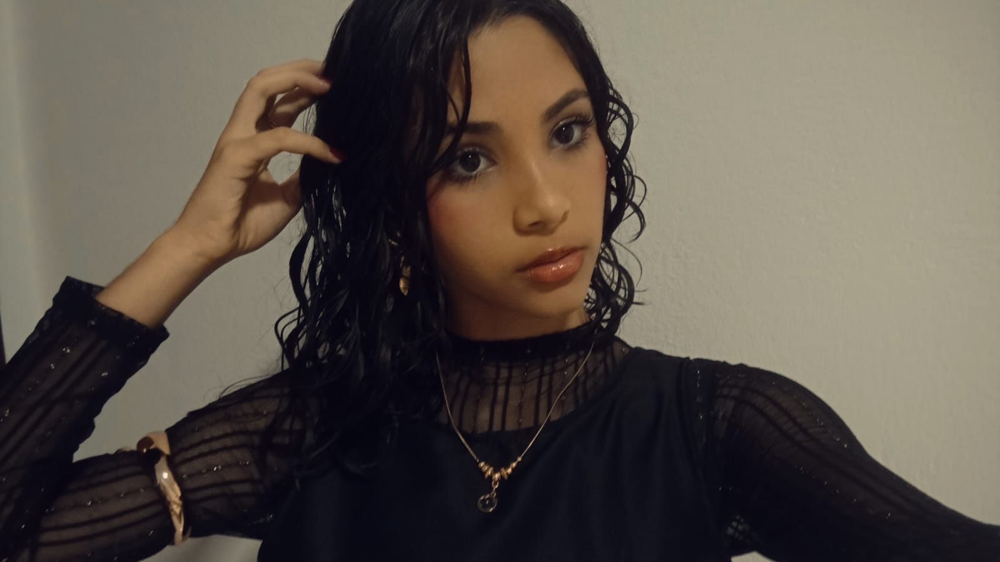

Meu nome é Ana Ellyza Venceslau de Araújo, sou de Várzea.No meu tempo livre gosto de fazer inúmeras coisas como ouvir música,ler,desenhar,cozinhar,assistir filmes ou séries, pintar as unhas. Oque provavelmente me descreve é minha vontade de dormir o tempo todo e não querer acordar de jeito nenhum.
Adoro mpb, principalmente Djavan e Gal gosta, gosto de colecionar smiskis, sonny angels e sylvanian families. Minha cantora favorita é a Beabadoobee. Faço aniversário dia 29 de abril de 2010, tenho 16 anos. Minhas cores favoritas são amarelo e rosa claro. Minha trilogia de livros favoritos são de Manual de assassinatos para boas garotas feito pela minha escritora favorita chamada Holly Jackson. Minha comida preferida é salada de fruta e macarrão com queijo. Meus filmes favoritos são noite passada em soho, fragmentado e but im a cheerleader e as minhas séries favoritas são yellowjackets, manuel de assassinatos para boas garotas(de novo essa obra) e hora de aventura
| O que eu gosto | Motivo |
|---|---|
| leões marinhos | Porque são bobos e engraçados. |
| hqs de invencível | é uma obra bem feita e com um traço muito bonito. |
| dias chuvosos | são ótimos para relaxar e para passar horas dormindo. |